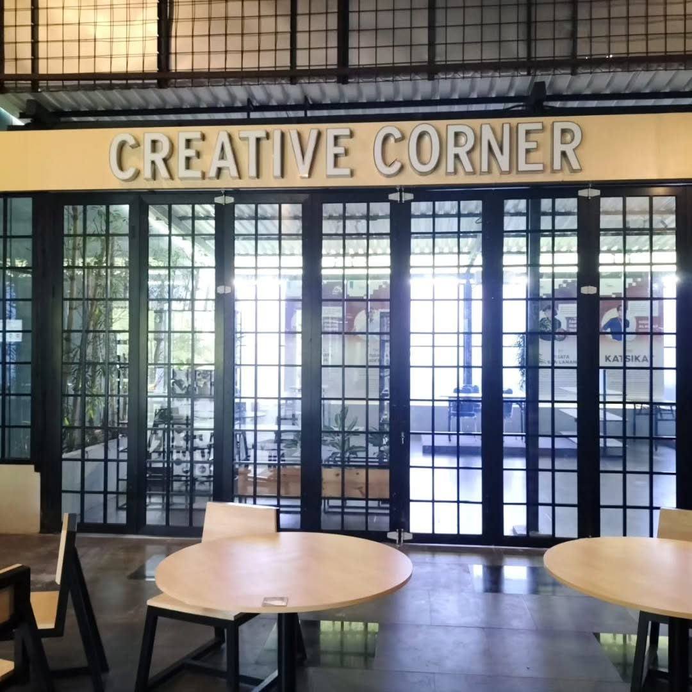

Arsitek & gambar 3D
Denah tata ruang, visualisasi 3D, dan gambar kerja teknis siap bangun.
Rincian layananPerencanaan gambar kerja 3D, pembangunan baru, renovasi, hingga custom furniture dengan RAB transparan dan bergaransi.

Perencanaan hingga serah terima
Ruang, biaya, dan lingkup kerja dibahas sejak awal.
Pilihan pekerjaan
01 / 05Perencanaan massa bangunan dan tata lanskap untuk lingkungan kampus.

02 / 05Penataan area kerja dengan partisi kaca dan bukaan cahaya alami.
 03 / 05
03 / 05Pembaruan tampilan muka bangunan dengan material bertekstur.
Satu tim, tiga disiplin
Lingkup, spesifikasi, jadwal, dan biaya disepakati sebelum pekerjaan berjalan.
Denah tata ruang, visualisasi 3D, dan gambar kerja teknis siap bangun.
Rincian layananPembangunan rumah, ruko, dan gudang dengan lingkup serta material terukur.
Rincian layananKitchen set, wardrobe, panel, dan interior kantor sesuai ukuran ruang.
Rincian layananCara kerja
Setiap tahap memiliki keluaran dan persetujuan agar keputusan proyek tercatat.
Cek kondisi lokasi, ukur luas ruangan, dan sesuaikan rencana dengan batas anggaran.
Hasil: Catatan Kebutuhan & Estimasi AwalPembuatan visualisasi 3D ruang serta rincian biaya material dan pekerjaan secara terbuka.
Hasil: Gambar Kerja 3D & Dokumen RABPengerjaan lapangan sesuai jadwal yang disepakati dengan laporan progres foto/video berkala.
Hasil: Laporan Progres MingguanPengecekan detail hasil akhir bersama klien sebelum serah terima kunci dan masa pemeliharaan.
Hasil: Berita Acara & Garansi PekerjaanKomitmen kerja
Kesepakatan yang terukur membantu menjaga hasil dan komunikasi selama proyek.
Item pekerjaan dan spesifikasi material dijabarkan sebelum kontrak disetujui.
Dokumentasi pekerjaan dibagikan berkala sesuai jadwal proyek.
Lingkup, masa berlaku, dan pengecualian garansi dijelaskan saat serah terima.
Cerita pekerjaan
Rating 5,0/5 dari 80 ulasan merupakan informasi yang diberikan pemilik bisnis. Buka Google Maps untuk membaca ulasan asli dan memeriksa konteksnya.
Diskusikan tahapan kerja, target waktu, dan cara tim mengabarkan perubahan jadwal.
DISKUSIKAN SAAT KONSULTASIPeriksa foto hasil, detail sambungan, dan kecocokan material dengan spesifikasi.
DISKUSIKAN SAAT KONSULTASITanyakan kanal komunikasi, frekuensi laporan, dan penanggung jawab proyek.
DISKUSIKAN SAAT KONSULTASI